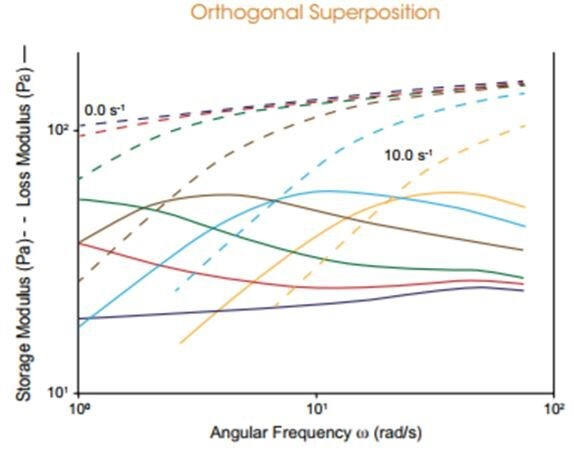
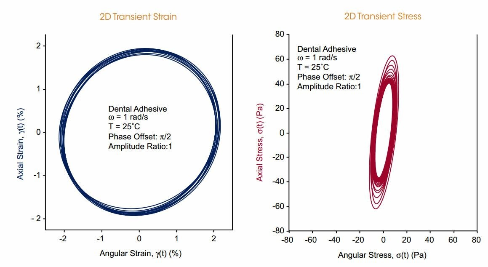

TA Instruments introduces a new dimension in rheological testing exclusive to the ARES-G2. Simultaneous deformation in the angular and axial directions unlocks all new capabilities for probing nonlinear and anisotropic behavior of complex fluids. This new testing capability utilizes the unique capabilities of the ARES-G2 FRT to apply oscillation in the axial direction, orthogonal to the direction of angular shear.
Orthogonal Superposition
Xanthan Gum Solution: An orthogonal superposition experiment was performed on a 2% Xantham Gum solution in water while subjected to steady shear from 0 s-1 to 10 s-1. A frequency sweep was performed simultaneously, revealing the dynamic moduli orthogonal to the direction of steady shear. This demonstrates that the time scale of terminal flow – indicated by the crossover frequency – moves to shorter time scales as the shear rate increases.

2D Small Amplitude Oscillatory Shear
Highly Filled Dental Adhesive Paste: 2D-SAOS reveals anisotropy in a fluid, which may be induced by sample shear history. This highly-filled dental adhesive paste underwent pronounced alignment as the result of previous shear flow. The sample was subjected to an isotropic two-dimensional small amplitude deformation. The resulting stress is clearly anisotropic, revealing the anisotropy of the fluid. This technique can be particularly helpful when exploring thixotropic behavior in filled systems.
